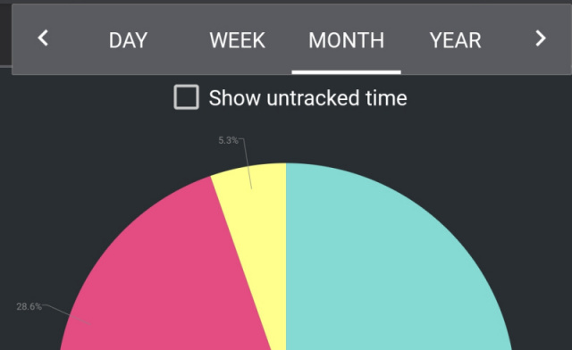

There is a crack in everything, that's how the light gets in. -Leonard Cohen
Mistakes are illuminating; they can throw light on the inner workings of mechanisms that might be otherwise invisible--like when you peer into the cavern of an escalator opened up for repairs.
What got me thinking about spatial metaphors for time was an annoying mistake I often make in a time logging app: There are arrows on the left and right for switching between months (or weeks, or days), and when I do this I have a little hesitation, an uncertainty, and often end up clicking the wrong one.

(The app, by the way, is called aTimeLogger and it's very nice.)
The correct answer is right-arrow for next month, which makes perfect sense. For a start, it chimes with the convention--at least for people who write in a left-to-right direction--that the previous thing is on the left and the next thing is on the right.
Also, in other calendar-type views, the days are are arrayed in a left-to-right sequence: Monday-Tuesday-Wednesday... When you do project management or write out a plan along a horizontal axis, tomorrow is to the right of today. The things to do first are on the left and you progress through them in a left-to-right direction. In other words, the arrow of time points to the right.
So there was this strange, but on the whole unimportant, quirk that in the time tracker app I was so frequently tempted go right to see last month's hours. I didn't think much more about it--after all, left-right confusion is a common enough occurrence.
But one day, I happened across a passage in a book that struck me as somehow analogous to my left right mistake. Though this time the arrow of time was placed in a river. In Le Otto Montagne, by Paolo Cognetti, there is a scene where the father says to his son "do you think the past can pass another time?", and then goes on to pose this puzzle (see footnotes for the original Italian):
"See that stream? Let's pretend that the water is time flowing. If the point where we are now is the present, in which direction do you think the future is?" 1
The boy thinks about it and gives the obvious answer: the future is where the water is going: downstream. To which his father replies, "Wrong." But no further explanation is offered there and then.
After all, this exchange reflects a pretty common way of thinking about time, which is to transpose it into spatial terms. In Surfaces and Essences: Analogy as the Fuel and Fire of Thinking, Douglas Hofstadter and Emmanuel Sander explain:
For example, time is often characterized linguistically in terms of physical space (in three weeks; at four o’clock; a distant era; the near future; from now on; a tradition that goes back to the seventeenth century), and conversely, space is often represented in terms of time (the first street after the traffic light; the road changes name when it crosses the river; a star twelve light-years distant).
Likewise, life is often spoken of in terms of motion or a trip (the path of her success; a sinuous career; the dead end in which they’re trapped), with everyday events as places one passes through (I’m going to see them tomorrow; I’ll come back to that point)
So if we imagine that the flow of time is like the flow of water in a stream, it seems reasonable to think : "the bit of water I am standing in this moment will be carried downstream in the future, so the future is downstream." In other words, the future is further ahead, in the direction of motion. Just like if I am driving along a road I think of the "next turning" as being both in the future (in time) and further along (spatially) in my direction of motion. Or if I am riding on a train, "three stops from now" is both further away spatially, and further ahead in the future, than the "next stop".
But what about when we are looking at the flow of time side-on, as when looking at a calendar or at a timeline drawn on a piece of paper? Where would we place the "forward" direction then? Well, it might reasonably be wherever is the typographically-conventional forward direction for writing, books, and so on. So, for speakers of Western languages, to the right.
Accordingly we would draw the river so that its water flows toward the right, and similarly we might draw a car moving along a road from left to right. This is no different from expecting the next page of a book, or the next day in a calendar, or the future in a timeline, to be on the right.
And yet there is still the fact that I was clicking on the left arrow to get to the next day. And the fact that the father said that "the future is downstream" is wrong. Luckily the book does give us an explanation because, later on, contemplating the fish swimming in the stream, the boy reflects:
I began to realize that, for fish in a river, all things come from upstream: insects, twigs, leaves, everything. That's why fish face upstream, waiting for what is to come. If the point where you stand in a river is the present, I thought, then the past is the water that has passed you, and is now flowing away downward, where there is nothing more for you, while the future is the water that reaches you from above, bringing surprises and dangers. The past is downstream, the future is upstream. That's how I should have answered my father's question. Whatever destiny is, it lies in the mountains above our heads.2
This doesn't seem so strange once it's spelled out like this, because there are plenty of common idioms, such as "water under the bridge" (or "acqua passata" in Italian) that seem to rely on the metaphor that whatever has flowed downstream ("passed us" as it were), is past. Even if we look at the originator of the "time is like a river analogy", we can see that the idea seems to be that the things that are "over and done with" are carried away, downstream.
“Time is like a river made up of the events which happen, and a violent stream; for as soon as a thing has been seen, it is carried away, and another comes in its place, and this will be carried away too.”
― Marcus Aurelius, Meditations
Why this apparent contradiction in the spatial metaphors? If we think about it it comes down to the details of the analogy. At first blush it might seem that the water flowing in the river, the car driving along a road, or the train proceeding on its tracks are all "analogous" analogies, as it were, for representing time spatially as motion in a linear direction. But they differ in one important respect: who is it that is moving? Is it time that is moving, or is it the person experiencing time that is moving?

In the car and train examples, it is we who are moving through time. Time is a line that sits still, like a road or a train track, and we travel along it in the forward direction.
In the river analogy it is we who are stationary, immersed in time like the fish in the stream, and time is like the water that continually flows past us. In this case the next moment comes to us from the upstream direction, while moments that have passed flow away downstream.
The river image cannot properly be compared to the others unless we somehow "normalize" it so that there, too, we are "moving forward through time". To do this, since motion is relative, we can consider that water flowing downstream past a stationary fish is the same thing as a stationary stream in which a fish travels upstream.
So now the fish, car, and train are the same thing, or at least "more analogous" than before. Each is moving forward through space along a medium (road, track, river) that sits still, and in which the forward direction is the future. In the case of the river, the future is upstream. To be clear, we mean of course that the future from the point of view of the fish is upstream. The future of the individual water molecules that flow past the fish is still downstream--but we don't care about those.
So the original ambiguity arises from a confusion about what is actually moving: in the car and train analogies it is we who are moving through time while in the river analogy we sit still and it is time itself that is moving past us.
In The Stuff of Thought, Steven Pinker talks about how our language (and so our thinking) employs this spatial metaphor for time:
In the TIME ORIENTATION metaphor, an observer is located at the present, with the past behind him and the future in front, as in That’s all behind us, We’re looking ahead, and She has a great future in front of her.
And then goes on to explain that motion can be added to this metaphor in two contradictory ways:
In the MOVING TIME metaphor, time is a parade that sweeps past a stationary observer: The time will come when typewriters are obsolete; The time for action has arrived; The deadline is approaching; The summer is flying by.
Here, time is like the river water flowing past the fish.
But we also find a MOVING OBSERVER metaphor, in which the landscape of time is stationary and the observer proceeds through it: There’s trouble down the road; We’re coming up on Christmas; She left at nine o’clock; We passed the deadline; We’re halfway through the deadline; We’re halfway through the semester.
Here time is like the road or railroad track.
Because these two motion metaphors are incompatible, we get an ambiguity in language that parallels the ambiguity of the father's which-way-is-the-future question in Le Otto Montagne.
As a result, expressions like Let’s move the meeting ahead a week are ambiguous. They can mean “make it earlier,” if ahead is defined by the parade of time past the observer, or “make it later,” if ahead is defined by the path of the observer through the landscape.
A slightly different handle on the linguistic ambiguity is provided in Lakoff's Metaphors We Live By. The issue is that some expressions orient times with respect to people:
... expressions like ahead of us, I look forward, and before us orient times with respect to people,
(and here again, the people facing the oncoming time are like the upstream-facing fish)
While others orient times relative to other times:
expressions like precede and follow orient times with respect to times.
(So in these the people are no longer immersed in the river of time, facing the oncoming future; here we have metaphorically stepped out of the river and are observing the timeline just as we would a number line. Tuesday follows Monday in the same way that the number two follows the number one. )
All of which leads to the rather paradoxical conclusion:
That is why the weeks to follow are the same as the weeks ahead of us.
All of this certainly sounds as if it should have something to do with my confusion about whether to click the left or right arrow to get to next month.
Is this what is happening? Possibly... Though it does seem a little bit odd to be placing myself inside the Ul, like a left-facing fish sitting on the current month, waiting with gaping mouth for the month to come.
Let's step outside the UI and think about it a bit more. I am looking at the calendar app which essentially represents a timeline, and let's assume for a moment that in my mental model it does point in the most natural direction, i.e. to the right. So that, looking at this month, next month is situated to the right of the screen, and last month is to the left.
Now, I want to go to next month, but how do I do that? I cannot actually look further to the right and see next month.
If I imagine the line of months arrayed side-by-side behind my screen, and my screen as a sort of window that can frame one month at a time, I have to do some kind of action that will either 'pull' the months to the left so that my stationary screen is framing the next month or, if the months sit still, 'push' my screen to the right so that it's centred one month along.
This gets us into the paradoxical world of spatial metaphors for space. On a screen, you cannot actually perform whatever motion you are envisaging. What you can do is some virtual gesture--either directly on a touchscreen, or mediated by a mouse or UI buttons and controls--that represents the desired motion. And which gesture is being represented can be ambiguous.
For example, to simplify things let's just imagine a real physical book. The next page is on the right. So, on an ebook reader, if the UI just represents this spatial arrangement you could click or touch a right-facing arrow to go to the next page.
But what do you actually do on a physical book, to go to the next page. Your hand moves toward the left as you turn over the page. Because the way to go to the right, on a book, is to move the page you've just finished to the left. So on a touchscreen ebook reader I would expect to swipe left to 'go right', i.e. to the next page.
But what about if the ebook reader is on a computer that doesn't have a touchscreen? There will be right-left facing arrows for paging through the book, but what do these represent? If we interpret the arrows as abstractly representing the order of the pages, then we expect the right arrow to go to the next page. But if we interpret the arrows as representing the more concrete physical motion of turning the page, then the right arrow should go to the previous page!
In point of fact this type of mistake doesn't commonly happen. When performing touch gestures it is generally understood that you are directly pushing the content around (so you flick or slide the current page to the left to view the next one).
But when interacting with arrow buttons or other controls, we jump up to another level of abstraction: The arrow does not represent the physical action I would perform to turn over the page. It has the more abstract meaning of advance one page.
We've seen above the difference between touch gestures (interpreted literally: swipe left pushes the content to the left) and interactions with controls such as arrows (interpreted abstractly, so that you click a right arrow to achieve the same result as swiping left.).
A further layer of complication is added when you have a control with which you interact via touch gestures: ie, the computer trackpad. What is the 'correct' level of abstraction here? When you swipe your fingers around on the trackpad, are you directly pushing around the content? (This school of thought is known as 'natural' scrolling). Or are you interacting as with a control, on some higher level of abstraction (This school of thought is known as 'reverse' scrolling).
So, imagine you are looking at a document or web page on your computer screen, and you want to scroll down to continue reading. On a touchscreen you would push the content up to reveal the continuation down below. (This is the same as flicking left to turn the page in an ebook.) But what do you do on the trackpad?
'Natural' scrolling says you treat the trackpad as if it were the actual touchscreen, and perform on it the exact same action you would use to push content around on the screen: so, swipe upward to push the content up, and hence scroll down.
'Reverse' scrolling says you treat the trackpad more like an arrow key, so you swipe down because that is the direction you want to go (ie. scroll down), though that will of course have the effect of pushing the content up.
It's a controversial issue but you can see how both are equally correct and equally odd---depending on what your mental representation of the trackpad is. I mention this just to show again how shifting one level of abstraction can invert up and down (or left and right).
So here's the thing: In my app (let's look at it again), you can interpret the arrows as straightforward contols, so that the right arrow has the abstract meaning of 'forward' or 'next'.
But if you interpret these arrows as somehow directly pushing the content around on the screen, then the left arrow would push the currently visible month to the left, thereby revealing next month.
I think it is this slippage to a lower, more concrete level of abstraction, that causes my mistake in this interface. The arrow button is meant to be interpreted abstractly, but on smartphone apps it is also much more common to push content around through direct touch gestures, rather than with an arrow control. The conflict between these two metaphors results in the directional ambiguity.
1 Mi guardò con un’idea in testa che doveva divertirlo parecchio. – Secondo te il passato può passare un’altra volta?
– È difficile, – dissi, per non sbilanciarmi. Mi faceva sempre indovinelli di questo tipo. Vedeva in me un’intelligenza simile alla sua, portata per la logica e la matematica, e pensava fosse suo dovere metterla alla prova.
– Guarda quel torrente, lo vedi? – disse. – Facciamo finta che l’acqua sia il tempo che scorre. Se qui dove siamo noi è il presente, da quale parte pensi che sia il futuro?
Ci pensai. Questa sembrava facile. Diedi la risposta piú ovvia: – Il futuro è dove va l’acqua, giú per di là.
– Sbagliato, – decretò mio padre. – Per fortuna –.
2 Cominciai a capire un fatto, e cioè che tutte le cose, per un pesce di fiume, vengono da monte: insetti, rami, foglie, qualsiasi cosa. Per questo guarda verso l’alto, in attesa di ciò che deve arrivare. Se il punto in cui ti immergi in un fiume è il presente, pensai, allora il passato è l’acqua che ti ha superato, quella che va verso il basso e dove non c’è piú niente per te, mentre il futuro è l’acqua che scende dall’alto, portando pericoli e sorprese. Il passato è a valle, il futuro a monte. Ecco come avrei dovuto rispondere a mio padre. Qualunque cosa sia il destino, abita nelle montagne che abbiamo sopra la testa.